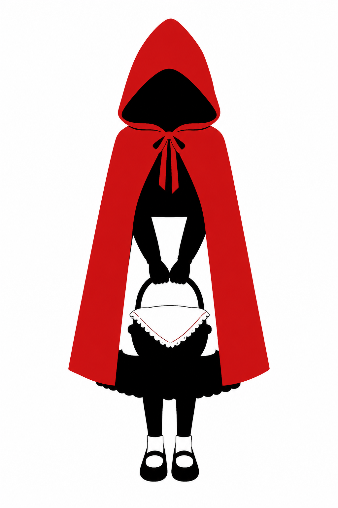
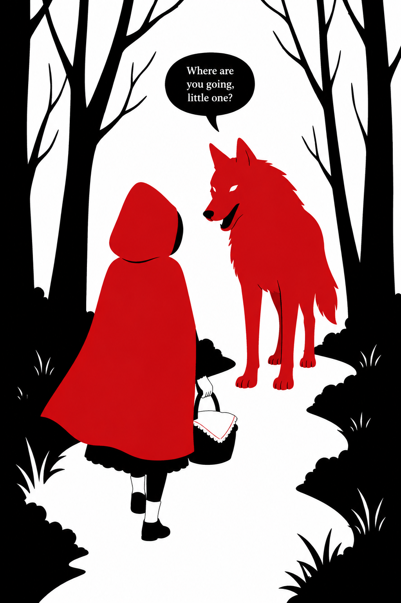
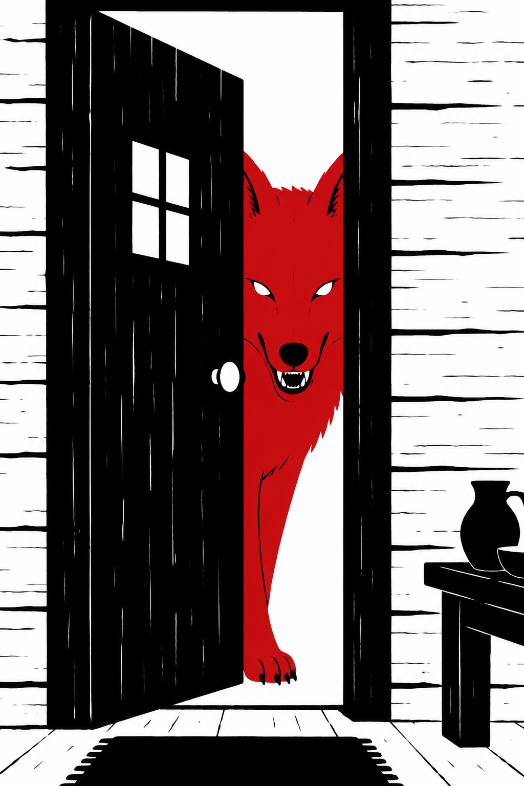
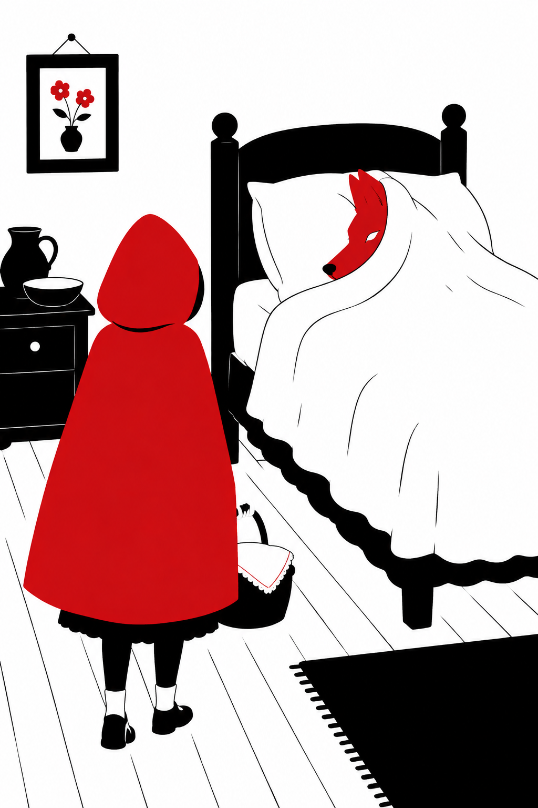
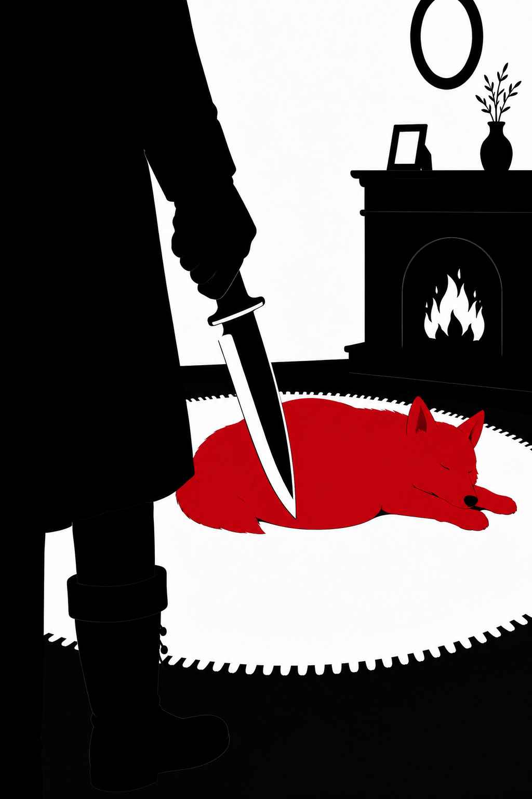
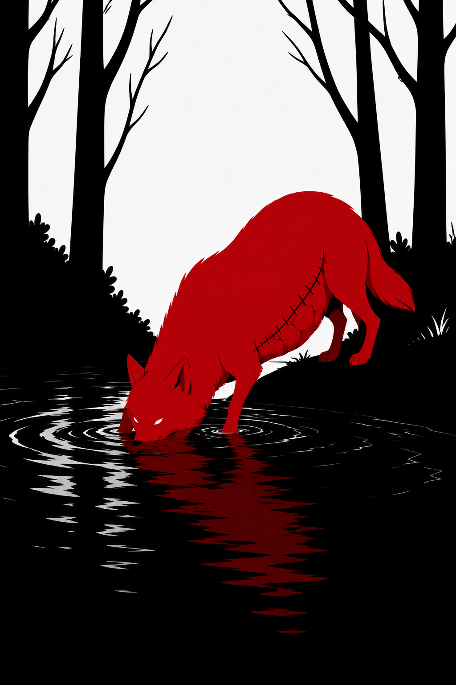
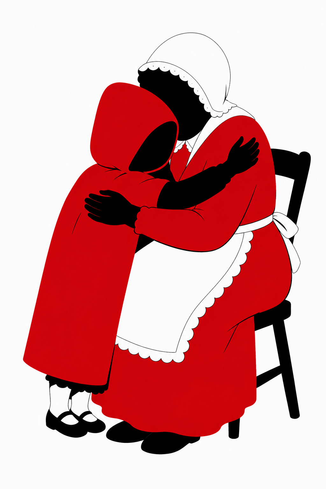

Había una vez una dulce niña que quería mucho a su madre y a su abuela. Les ayudaba en todo lo que podía y como era tan buena el día de su cumpleaños su abuela le regaló una caperuza roja. Como le gustaba tanto e iba con ella a todas partes, pronto todos empezaron a llamarla Caperucita roja.
Un día la abuela de Caperucita, que vivía en el bosque, enfermó y la madre de Caperucita le pidió que le llevara una cesta con una torta y un tarro de mantequilla. Caperucita aceptó encantada.
- Ten mucho cuidado Caperucita, y no te entretengas en el bosque.
- ¡Sí mamá!

La niña caminaba tranquilamente por el bosque cuando el lobo la vio y se acercó a ella.
- ¿Dónde vas Caperucita?
- A casa de mi abuelita a llevarle esta cesta con una torta y mantequilla.
- Yo también quería ir a verla…. así que, ¿por qué no hacemos una carrera? Tú ve por ese camino de aquí que yo iré por este otro.
- ¡Vale!

El lobo mandó a Caperucita por el camino más largo y llegó antes que ella a casa de la abuelita. De modo que se hizo pasar por la pequeña y llamó a la puerta. Aunque lo que no sabía es que un cazador lo había visto llegar.
- ¿Quién es?, contestó la abuelita
- Soy yo, Caperucita - dijo el lobo
- Que bien hija mía. Pasa, pasa
El lobo entró, se abalanzó sobre la abuelita y se la comió de un bocado. Se puso su camisón y se metió en la cama a esperar a que llegara Caperucita.

La pequeña se entretuvo en el bosque cogiendo avellanas y flores y por eso tardó en llegar un poco más. Al llegar llamó a la puerta.
- ¿Quién es?, contestó el lobo tratando de afinar su voz
- Soy yo, Caperucita. Te traigo una torta y un tarrito de mantequilla.
- Qué bien hija mía. Pasa, pasa
Cuando Caperucita entró encontró diferente a la abuelita, aunque no supo bien porqué.
- ¡Abuelita, qué ojos más grandes tienes!
- Sí, son para verte mejor hija mía
- ¡Abuelita, qué orejas tan grandes tienes!
- Claro, son para oírte mejor…
- Pero abuelita, ¡qué dientes más grandes tienes!
- ¡¡Son para comerte mejor!!
En cuanto dijo esto el lobo se lanzó sobre Caperucita y se la comió también. Su estómago estaba tan lleno que el lobo se quedó dormido.

En ese momento el cazador que lo había visto entrar en la casa de la abuelita comenzó a preocuparse. Había pasado mucho rato y tratándose de un lobo... ¡Dios sabía que podía haber pasado! De modo que entró dentro de la casa.
Cuando llegó allí y vio al lobo con la panza hinchada se imaginó lo ocurrido, así que cogió su cuchillo y abrió la tripa del animal para sacar a Caperucita y su abuelita.

El cazador pensó que habria que darle un buen castigo.
De modo que le llenó la tripa de piedras y se la volvió a coser.
Cuando el lobo despertó de su siesta tenía mucha sed y al acercarse al río, ¡zas! se cayó dentro y se ahogó.

Caperucita volvió a ver a su madre y su abuelita y desde entonces prometió hacer siempre caso a lo que le dijera su madre.
FIN.